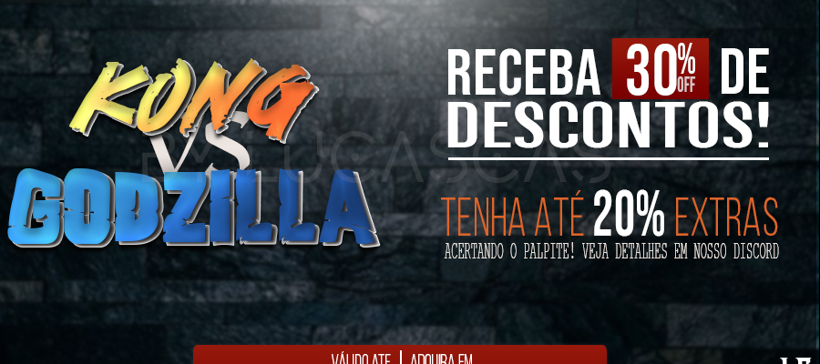
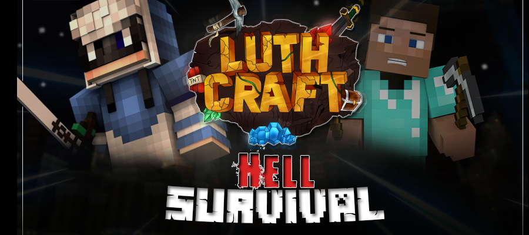
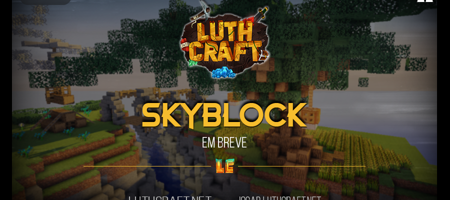

;
DustMC - Home
Inicio
Loja
Equipe
Punições
Ajuda
Ultimas Noticias!



Perguntas Frequentes?
O que o DustMC?
O Dust é uma rede de servidores focada em mini-games tendo prioridade a jogabilidade do
público. Sempre tendo o objetivo de inovar, evoluir e melhorar nossa qualidade o maximo!